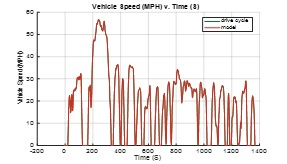
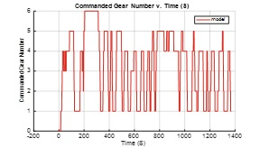
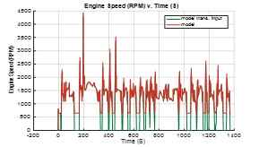
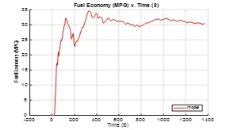

2. Overview¶
2.1. Running ALPHA - Quickstart¶
Launch Matlab and make sure that REVS_Common is on the Matlab path as described in the installation instructions above. As a quick check you can execute the following Matlab command, if it succeeds then it should return the path to the top-level ALPHA model:
which REVS_VM
If the command fails then you need to double check your path setup.
Change the Matlab working directory to the ALPHA DEMO folder and run run_ALPHA_quickstart. The REVS_VM model will open up (so we can watch the vehicle speed trace in real-time), the model will compile and run an EPA UDDS drive cycle. When the simulation is complete there will be two files in the output folder. The file names are prefixed with a timestamp, YYYY_MM_DD_hh_mm_ss_, following by sim_results.csv and sim_1_console.txt. For example, 2019_02_01_09_36_23_sim_results.csv and 2019_02_01_09_36_23_sim_1_console.txt, for files created on Feb 1st 2019, 23 seconds after 9:36 AM. The sim_results file contains a summary of the simulation inputs, settings and outputs. The console.txt file captures anything that would have been output to the Matlab console window. In this case it contains the SAE J2951 Drive Quality Metrics by default.
If you open run_ALPHA_quickstart in the Matlab editor you will see it only takes a handful of Matlab commands to define and run a simulation that automatically produces standardized output summary files. Examining the Matlab workspace after the model runs reveals only a single variable, the sim_batch object. The only outputs from this model are contained in the output files. More information on datalogging and model outputs will be discussed below.
2.2. Understanding the Modeling Process¶
The fundamental modeling process consists of creating a Matlab workspace that contains all the variables necessary to run the REVS_VM (REVS Vehicle Model) Simulink model. There are several ways to accomplish this.
Load a saved workspace available in a .mat file and then run the model
Pre- and post-processing must be handled by the user, this is somewhat of an advanced use case but can be very useful under the right circumstances
Create an ad-hoc script to load individual param files (Matlab scripts containing component data structures), manually performing pre- and post-processing
This was the process prior to the standardized batch process, it leads to duplication of effort and inconsistent approaches across users and should be avoided
Create and execute a batch run using class_REVS_sim_batch
Provides a consistent approach to the modeling process
A sim batch may be used to run any number of simulations, even just one
Automatically provides standardized output summary results
Provides a framework for pre- and post-processing simulations
Allows convenient capability to sweep variables and define multiple simulation scenarios
Provides a framework for running “performance neutral” simulations
Provides capability to run simulations in parallel, on one or multiple computers, and automatically collate the results into a single output summary file
Provides a framework for controlling simulation datalogging and auditing
Provides a framework for controlling the amount (“verbosity”) of output summary data
Provides a framework for saving Matlab workspaces at various points in the modeling process
It is easy and convenient to define and reuse sim batches across multiple projects
The batch approach will be the primary focus of this document due to its numerous advantages.
2.3. Controlling the Modeling Process¶
2.3.1. What is a Sim Batch?¶
A class_REVS_sim_batch object actually contains a vector of class_REVS_sim_case objects stored in the sim_case property. A sim_case could be created and run without a batch but there is no advantage to doing so since the batch process provides all the necessary pre- and post-processing is much easier to use. Typically the only reason to manipulate a particular sim_case would be to extract its local workspace to populate the top-level workspace for direct access. This will be covered in more detail below in the discussion on working with workspaces.
2.3.2. Understanding the ALPHA quickstart script¶
The run_ALPHA_quickstart M-script demonstrates the simplest possible batch process - a single simulation run with the default settings, only the minimum required input files and minimal outputs. Let’s take a closer look.
run_ALPHA_quickstart.m:
clear; clear classes; clc; % clear workspace, classes and console
Clears the Matlab workspace, classes and console. This is highly recommended before running a batch
sim_batch = class_REVS_sim_batch(REVS_log_default); % create sim_batch
Creates sim_batch, an object of class class_REVS_sim_batch, and instructs it to log only the minimum required signals in the model. Datalogging will be discussed in more detail below.
sim_batch.param_path = ‘param_files/MPW_LRL’; % set path to param files
The batch needs to know where to find param files that are not in the REVS_Common folder. In this case the param files are located in the MPW_LRL subfolder of the local param_files folder.
4. sim_batch.config_set = { % define config_set [‘VEH:vehicle_2020_MPW_LRL + ENG:engine_2013_Chevrolet_Ecotec_LCV_2L5_Reg_E10 + TRANS:TRX11_FWD + ELEC:electric_EPS + CYC:EPA_UDDS + CON:MPW_LRL_CVM_controls_param’] };
The sim_batch.config_set defines the set of the simulations to be run by creating a cell array of one or more config strings. Within the config string are the tags VEH:, ENG:, TRANS:, ELEC:, CYC: and CON:. Following each tag is the name of a file that contains simulation inputs. The VEH: tag loads the vehicle information such as roadload, test weight, etc. The ENG: tag loads the engine information, in this case the engine is actually loaded from REVS_Common since it is one of the data packet engines, the other param files are loaded from the local param file directory. The TRANS: tag loads the transmission parameters, in this case for a 6-speed automatic. The ELEC: tag loads parameters that define the electrical system and accessories for this vehicle. The CYC: tag tells the simulation which drive cycle to run, in this case an EPA UDDS drive cycle. Lastly, the CON: tag tells the simulation which controls settings to use. In this case, the controls settings show that start-stop is disabled for this run. The CVM in MPW_LRL_CVM_controls_param stands for Conventional Vehicle Model. Other abbreviations that you may encounter are EVM for Electric Vehicle Model and HVM for Hybrid Vehicle Model. Electric vehicles and hybrid vehicles have their own control parameters.
open REVS_VM; % optional, but allows observation of the model while running
This simply opens the top-level Simulink model so that the simulation progress can be observed via the vehicle speed and drive cycle plot that comes from the top-level Scope block. This step is optional.
sim_batch.run_sim_cases();
This handles simulation pre-processing, running and post-processing
2.3.3. Understanding Simulation Pre- and Post-Processing¶
The goal of simulation pre-processing is to set up the simulation workspace before simulation, including any modifications to data loaded from the specified param files. For example, we may load a particular vehicle param file and then want to change the test weight or roadload in some manner and then run the simulation, perhaps as part of a sweep of test weight values. Any arbitrary M-script can be run in order to prepare the simulation workspace.
The REVS_VM model itself performs some post-processing to create simulation results (phase integrated results, for example), datalogs, and to perform any auditing that may be desired. These tasks are handled by creating result, datalog and audit objects in the workspace from class_REVS_result, class_REVS_datalog and class_REVS_audit classes respectively. These objects are created in the model’s StopFcn callback which can be seen in the model’s Model Properties dialog box.
Simulation post-processing may be used to take the raw simulation outputs and calculate fuel economy or GHG emissions. The default simulation post-processing is generally used, but any M-script may be run if desired.
Batch post-processing may be used to examine the total set of simulation results and perform additional processing such as finding performance-neutral results from among a set of runs and then outputting those to a separate file. Any arbitrary M-script may be run if desired.
There are a few class_REVS_sim_batch properties that control pre- and post-processing of the simulation data by determining which processing scripts to run.
sim_case_preprocess_script: by default this is set to REVS_preprocess_sim_case which performs pre-processing for the most common overrides that should apply to pretty much any simulation case, regardless of the type of project you may be working on. The overrides/modifiers come from optional config string tags. For example, the ETW_LBS: tag may be used to override the vehicle test weight from the vehicle param file. For application-specific pre-processing you would create a custom script that would (generally) call REVS_preprocess_sim_case and then perform additional pre-processing. The custom script may handle user-defined application-specific config tags. For example, for 2025 Mid-Term Evaluation work, the MTE_batch_sim_case_preprocess script calls REVS_preprocess_sim_case and then performs MTE-related overrides and defaults for things like transmission sizing or behavior.
sim_case_postprocess_script: by default this is set to REVS_postprocess_sim_case which handles calculating fuel economy for the three main powertrain types (Conventional, Hybrid, and Electric). This script calculates cold-corrected FTP and weighted FTP-HWFET results from the raw phase results, among other things.
postprocess_script: by default this is set to REVS_postprocess_sim_batch which has some code for finding performance-neutral runs out of a simulation set that provides a performance baseline for one or more sets of runs. The selected runs, if any, are output to a separate output file.
2.3.4. Understanding Config Strings (Keys)¶
Formatting for the batch config_set config strings (also known as Keys in the output summary file) is defined by class_REVS_sim_config. The easiest way to see which config tags are available is to use this command:
class_REVS_sim_config.show_tags
This will display a list of tags and the name of the workspace variable associated with them which can be used in processing scripts. A partial list, for example:
class_REVS_sim_config.show_tags
ans =
87x1 cell array
'PKG: -> sim_config.tech_package'
'UKN: -> sim_config.unique_key_num'
'PTRAIN: -> sim_config.powertrain_type'
'CYC: -> sim_config.drive_cycle'
'ENG: -> sim_config.engine'
'TRANS: -> sim_config.transmission'
'VEH: -> sim_config.vehicle'
'ELEC: -> sim_config.electric'
'ACC: -> sim_config.accessory'
'CON: -> sim_config.controls'
'DRV: -> sim_config.driver'
'AMB: -> sim_config.ambient'
'VEH_LBS: -> sim_config.vehicle_lbs'
...
sim_config is a variable created automatically by class_REVS_sim_batch and is made available to the simulation workspace prior to simulation. The sim_config property names give at least a preliminary understanding of what a tag means and can be further examined by taking a look at the default pre- and post-processing scripts.
If we take a look at class_REVS_sim_config we can see each property is an instance of a class_REVS_config_element. For example:
drive_cycle = class_REVS_config_element('CYC:', 'literal');
ETW_lbs = class_REVS_config_element('ETW_LBS:', 'eval');
mass_multiplier = class_REVS_config_element('ETW_MLT:', 'eval', 1.0);
The arguments to the class_REVS_config_element constructor are the tag string, the tag type, and an optional default value.
2.3.4.1. Literal Config Tags¶
In the example above, the drive_cycle property holds a ‘literal’ tag, which means that the part of the string associated with that tag will not automatically be evaluated (turned into a numeric or other value, but rather taken literally). Typically this would be used for something like file names or other strings. Literal tags may be evaluated in user scripts. For example, if the literal tag was the name of script then that script may be called in the user pre- or post-processing scripts at the appropriate time to perform whatever its function is. Literal tags can be used to hold a single value or, combined with delayed evaluation (in a user script, instead of during config string parsing) may hold multiple values. For example, within a config string, these are possible uses of the CYC: tag:
CYC:EPA_IM240
CYC:{''EPA_FTP_NOSOAK'',''EPA_HWFET'',''EPA_US06''}
In the first example, the CYC: tag refers to a single drive cycle file, EPA_IM240.mat which will used for the simulation. In the second case, the CYC: tag used to store a string representation of a Matlab cell array of drive cycle strings. In this case, sim_config.drive_cycle would be:
'{''EPA_FTP_NOSOAK'',''EPA_HWFET'',''EPA_US06''}'
Which would evaluate (using the Matlab eval() or evalin() command) to the cell array of strings:
{'EPA_FTP_NOSOAK','EPA_HWFET','EPA_US06'}
Drive cycle loading of a single cycle or the combining of multiple cycles into a single cycle is automatically handled in class_REVS_sim_case.load_drive_cycles() but the same concept can apply to user-defined literal tags used by user scripts. Drive cycle creation and handling will be discussed in further detail below.
2.3.4.2. Eval Config Tags¶
As shown above, the class_REVS_sim_config ETW_lbs property is an ‘eval’ tag which means its value will be automatically evaluated by the class_REV_sim_config in the parse_key() method. If the eval tag is created with a default value then that value will be used if the tag is not specified by the user. Eval tags should be numeric or should refer to variables available in the workspace. An eval tag may evaluate to a single value or a vector of multiple values to perform variable sweeps. For example, the following would all be valid eval tags within a config string:
ETW_LBS:3625
ETW_LBS:[3000:500:5000]
ETW_LBS:4454*[0.8,1,1.2]
The first case evaluates to a single number, 3625, the second case evaluates to a vector, [3000 3500 4000 4500 5000], as does the last case which becomes [3563.2 4454 5344.8]. Any valid Matlab syntax may be used in an eval tag, including mathematical operations such as multiply, divide, etc. If addition is used, there must not be any spaces surrounding the + sign, as ‘ + ‘ (space,plus-sign,space) is the separator used to build composite config strings and will result in an erroneously split string.
2.3.4.3. Config String Expansion¶
Each string in the sim batch config_set cell array is evaluated to determine how many simulations it defines. As seen above, each tag may be used to define multiple values. Each config string is expanded to a full factorial combination of all of its elements. The expanded set of strings is stored in the sim batch expanded_config_set property after the expand_config_set() method is called. Config set expansion is handled automatically by the class_REVS_sim_batch run_sim_cases() method but under certain circumstances it may also be useful to manually expand the config set, although this is not typically done. Manual expansion could be used to examine the number of cases represented by a config set without having to commit to running any simulations.
For example, the following tag could be used within a config string to run simulations with and without engine start-stop:
+ SS:[1,0] +
Which would turn into two strings in the expanded config set:
+ SS:1 +
+ SS:0 +
An example with multiple tags with multiple values, this time for start-stop and normalized torque converter lockup:
+ SS:[1,0] + LU:[0,1] +
Which would turn into four strings in the expanded config set, representing all four cases:
+ SS:0 + LU:0 +
+ SS:0 + LU:1 +
+ SS:1 + LU:0 +
+ SS:1 + LU:1 +
String expansion provides a simple and powerful method for defining entire sets of simulations within a single user-defined config string.
2.3.4.4. Config String left-hand-side and right-hand-side and Unique Key Numbers¶
A special string separator, || (double vertical bars) may be used to separate the left and right hand sides of a config string. This is typically used for processing performance neutral runs but could also be used for any user-defined purpose. For performance neutral runs, the left hand side of the string defines the unique simulation case, and the right hand side is used to define multiple engine scaling levels to evaluate for performance neutrality and GHG emissions. The REVS_postprocess_sim_batch script considers all cases with the same left hand side to represent a single simulation case and then chooses the result from that set that meets performance criteria and has the lowest GHG emissions. Each unique left hand side is assigned a unique key number through the UKN: tag by the class_REVS_sim_batch gen_unique_config_set() method.
For example, this:
'SS:[1,0] + LU:[0,1]'
becomes this, representing four unique cases:
'UKN:1 + SS:1 + LU:0'
'UKN:2 + SS:1 + LU:1'
'UKN:3 + SS:0 + LU:0'
'UKN:4 + SS:0 + LU:1'
On the other hand, this:
'SS:[1,0] || LU:[0,1]'
becomes this, four simulations that represent two unique cases:
'UKN:1 + SS:1 || LU:0'
'UKN:1 + SS:1 || LU:1'
'UKN:2 + SS:0 || LU:0'
'UKN:2 + SS:0 || LU:1'
In this way, subsets of simulation batches may be considered as groups and the unique key number can be used to find these groups in the output file and then process them accordingly. In either case above, all four simulations will be run and all four results will be available in the output summary file.
2.3.4.5. Creating New Config Tags¶
class_REVS_sim_config defines quite a few useful tags that should cover many modeling applications but it’s also very easy to add new ones. Adding a new tag is as simple as adding a new property to class_REVS_sim_config:
new_config = class_REVS_config_element('NEWTAG:', 'eval', 42);
Which would show up as the following when calling class_REVS_sim_config.show_tags:
'NEWTAG:42 -> sim_config.new_config'
The default value (if provided) is shown next to the tag, in this case the default value for sim_config.new_config is 42. The variable sim_config.new_config would now be available for use in user pre- and post-processing scripts.
2.3.4.6. How to Use sim_config Values¶
The value of a sim_config property is accessed through the value property. In addition, the has_value() method can be used to check if a value has been set by the user before trying to use it in a script. For example, from REVS_preprocess_sim_case:
if sim_config.adjust_A_lbs.has_value
vehicle.coastdown_adjust_A_lbf = sim_config.adjust_A_lbs.value;
end
A default value, if provided, is always available even if the user has not provided a value (has_value() returns false).
2.3.4.7. Output Summary File Keys¶
The has_value() method is also used to cull unnecessary tags from the config string that appears in the output summary file Key column. Culling empty or default value tags from the Key column makes the strings easier to read and understand but still specifies the correct simulation parameters.
Keys from the output file can be used directly in new config sets by cutting and pasting them into user batch file config sets. In this way, an end-user of the simulation results can select runs to examine further or may even create new config strings to be run. Because the output summary file is a .csv file, commas in the Key column are replaced with # symbols to prevent incorrect column breaks. Even though the # symbol is not a valid Matlab operator, these strings can still be used directly in new config sets – the batch process converts #’s to commas before parsing the strings.
2.3.5. Controlling Datalogging and Auditing¶
2.3.5.1. Controlling Datalogging¶
Datalogging and auditing are controlled by the logging_config property of the class_REVS_sim_batch object. logging_config is an object of class class_REVS_logging_config. The constructor of class_REVS_sim_batch takes a single optional argument which is the default log list. A log list is a class_REVS_log_package object. Many predefined log lists are contained in the REVS_Commonlog_packages folder.
The following are typical examples of creating a sim batch and setting up the default datalogging:
sim_batch = class_REVS_sim_batch(REVS_log_default);
Log only the bare minimum required to calculate fuel economy and GHG emissions, this runs the fastest
sim_batch = class_REVS_sim_batch(REVS_log_all);
Log every available signal, this runs the slowest
sim_batch = class_REVS_sim_batch(REVS_log_engine);
Log the most common engine signals of interest
sim_batch = class_REVS_sim_batch(REVS_log_engine_all);
Log every available engine signal
Log packages can also be combined by using the logging_config.add_log() method:
sim_batch = class_REVS_sim_batch(REVS_log_default);
sim_batch.logging_config.add_log(REVS_log_engine);
sim_batch.logging_config.add_log(REVS_log_transmission);
Logs the minimum required signals and adds common engine and transmission datalogs
2.3.5.2. Understanding the datalog and model_data objects¶
The datalog object has hierarchical properties. The top level should look something like this:
datalog =
class_REVS_datalog with properties:
accessories: [1×1 class_REVS_logging_object]
controls: [1×1 class_REVS_logging_object]
drive_cycle: [1×1 class_REVS_logging_object]
driver: [1×1 class_REVS_logging_object]
electric: [1×1 class_REVS_logging_object]
engine: [1×1 class_REVS_logging_object]
transmission: [1×1 class_REVS_logging_object]
vehicle: [1×1 class_REVS_logging_object]
time: [137402×1 double]
For example, vehicle speed can be plotted versus time:
plot(datalog.time, datalog.vehicle.output_spd_mps);
The datalog object is also associated with a class_test_data object called model_data. The primary difference between the two is that model_data represents a subset of the logged data and has a common, high-level namespace that can be used to compare model data with test data or data from multiple model runs or even data different models. For example, vehicle speed can be plotted versus time:
plot(model_data.time, model_data.vehicle.speed_mps);
Generally it is best to use model_data for most analysis if it contains what you need. Datalogs are copied to the model_data object through the REVS_postprocess_XXX M-scripts in the REVS_Common/log_packages folder.
For example, REVS_postprocess_engine_basics_log.m:
model_data.vehicle.fuel.mass_g = datalog.engine.fuel_consumed_g;
model_data.engine.speed_radps = datalog.engine.crankshaft_spd_radps;
model_data.engine.crankshaft_torque_Nm = datalog.engine.crankshaft_trq_Nm;
model_data.engine.load_at_current_speed_norm = datalog.engine.load_norm;
model_data.engine.fuel.density_kgpL_15C = engine.fuel.density_kgpL_15C;
model_data.engine.fuel.energy_density_MJpkg = engine.fuel.energy_density_MJpkg;
model_data.engine.fuel.flow_rate_gps = datalog.engine.fuel_rate_gps;
model_data.engine.fuel.mass_g = datalog.engine.fuel_consumed_g;
In this example it can be seen that the fuel properties are pulled from multiple sources (the engine itself and also the engine datalogs) and put into a common location in the model data. Generally, the datalogs are model-centric and may contain shorthand notation (trq versus torque) whereas the model data is more function- or component-centric and uses a better naming convention. There is no automatic method for populating the model_data properties (scripts must be written by the user) and not all datalogs have (or should have) an associated property in the model data. Postprocess scripts are associated with class_REVS_log_package objects through the postprocess_list property which is a cell array of scripts to run after datalogging.
For example, the REVS_log_all package is defined like this:
function [log_package] = REVS_log_all()
log_package = class_REVS_log_package;
log_package.log_list = {
'result.*'
'datalog.*'
};
log_package.package_list = {mfilename};
log_package.postprocess_list = {'REVS_postprocess_accessory_battery_log',
'REVS_postprocess_alternator_log',
'REVS_postprocess_DCDC_log',
'REVS_postprocess_drive_motor_log',
'REVS_postprocess_engine_basics_log',
'REVS_postprocess_engine_idle_log',
'REVS_postprocess_mech_accessories_log',
'REVS_postprocess_propulsion_battery_log',
'REVS_postprocess_transmission_log',
'REVS_postprocess_vehicle_basics_log',
'REVS_postprocess_vehicle_performance_log',
};
end
2.3.5.3. Auditing¶
Auditing can be controlled by setting a sim batch logging_config audit flag:
logging_config.audit_total = true;
Audits the total energy flow for the entire drive cycle
Or:
logging_config.audit_phase = true;
Audits the total energy flow for the entire drive cycle AND also audits each drive cycle phase individually
By default both flags are set to false, only one flag or the other needs to be set. To print the audit to the console, use the print() method:
audit.print
Which should return something like the following for a conventional vehicle:
EPA_UDDS audit: -----------------
---- Energy Audit Report ----
Gross Energy Provided = 28874.34 kJ
Fuel Energy = 28868.08 kJ 99.98%
Stored Energy = 6.26 kJ 0.02%
Kinetic Energy = 0.00 kJ 0.00%
Potential Energy = 0.00 kJ 0.00%
Net Energy Provided = 7641.47 kJ
Engine Energy = 7637.05 kJ 99.94%
Engine Efficiency = 26.46 %
Stored Energy = 4.41 kJ 0.06%
Kinetic Energy = 0.00 kJ 0.00%
Potential Energy = 0.00 kJ 0.00%
Energy Consumed by ABC roadload = 3007.20 kJ 39.35%
Energy Consumed by Gradient = 0.00 kJ 0.00%
Energy Consumed by Accessories = 823.48 kJ 10.78%
Starter = 0.40 kJ 0.01%
Alternator = 286.81 kJ 3.75%
Battery Stored Charge = 0.00 kJ 0.00%
Engine Fan = 0.00 kJ 0.00%
Electrical = 0.00 kJ 0.00%
Mechanical = 0.00 kJ 0.00%
Power Steering = 0.00 kJ 0.00%
Electrical = 0.00 kJ 0.00%
Mechanical = 0.00 kJ 0.00%
Air Conditioning = 0.00 kJ 0.00%
Electrical = 0.00 kJ 0.00%
Mechanical = 0.00 kJ 0.00%
Generic Loss = 536.27 kJ 7.02%
Electrical = 536.27 kJ 7.02%
Mechanical = 0.00 kJ 0.00%
Total Electrical Accessories = 536.27 kJ 7.02%
Total Mechanical Accessories = 0.00 kJ 0.00%
Energy Consumed by Driveline = 3811.03 kJ 49.87%
Engine = 0.00 kJ 0.00%
Launch Device = 541.63 kJ 7.09%
Gearbox = 1572.46 kJ 20.58%
Pump Loss = 874.74 kJ 11.45%
Spin Loss = 382.50 kJ 5.01%
Gear Loss = 256.71 kJ 3.36%
Inertia Loss = 58.51 kJ 0.77%
Final Drive = 0.00 kJ 0.00%
Friction Brakes = 1669.65 kJ 21.85%
Tire Slip = 27.30 kJ 0.36%
System Kinetic Energy Gain = 0.44 kJ 0.01%
------------
Total Loss Energy = 7642.15 kJ
Simulation Error = -0.68 kJ
Energy Conservation = 100.009 %
2.3.6. How to Save and Restore Simulation Workspaces¶
There are several methods available to save and restore simulation workspaces. Generally, only one approach will be used at a time, but it is possible to combine approaches if desired.
2.3.6.1. Retain Workspaces in Memory¶
The simplest approach, for a relatively small number of simulations, is to retain the workspace in memory. Set the sim batch retain_output_workspace property to true. For example:
sim_batch.retain_output_workspace = true;
The workspace will be contained in the sim batch sim_case property which holds one or more class_REVS_sim_batch objects. To pull the workspace into the top-level workspace, use the sim case’s extract_workspace() method:
sim_batch.sim_case(1).extract_workspace;
The workspace is contained in the sim case workspace property but extracting the workspace to the top-level makes it easier to work with.
2.3.6.2. Saving the Input Workspace¶
The simulation workspace may be saved prior to simulation by setting the sim batch save_input_workspace property to true:
sim_batch.save_input_workspace = true;
This will create a timestamped .mat file in the sim batch output folder’s sim_input directory. The filename also includes the index of the sim case. For example, the input workspace for the first simulation (sim_1) in a batch:
output\sim_input\2019_02_11_16_46_37sim_1_input_workspace.mat
The workspace is saved after all pre-processing scripts have been run so the workspace contains everything required to replicate the simulation at a later time. This can be useful when running too many simulations to retain the workspaces in memory while also providing the ability to run individual cases later without having to set up a sim batch. The workspace may be loaded by using the load command, or double-clicking the filename in the Matlab Current Folder file browser.
2.3.6.3. Saving the Output Workspace¶
The simulation workspace may be saved after simulation by setting the sim batch save_output_workspace property to true:
sim_batch.save_output_workspace = true;
This will create a timestamped .mat file in the sim batch output folder. The filename also includes the index of the sim case. For example, the output workspace for the first simulation (sim_1) in a batch:
output\2019_02_11_16_52_39_sim_1_output_workspace.mat
The workspace is saved after all post-processing scripts have been run so the workspace contains everything required to replicate the simulation at a later time and also all of the datalogs, audits, etc. The simulation may be run again or the outputs examined directly without the need for running the simulation. Keep in mind that, output workspaces will always be bigger than input workspaces and also take longer to save. The workspace may be loaded by using the load command, or double-clicking the filename in the Matlab Current Folder file browser.
2.3.7. ost-Simulation Data Analysis¶
As mentioned above, a model_data object is created in the output workspace and may contain various model outputs. One of the easiest ways to take a look at simulation data is to run a Data Observation Report (DOR) on the model data. There are DORs for conventional (CVM), hybrid (HVM) and electric vehicles (EVM). To run the default conventional vehicle model DOR, use the REVS_DOR_CVM() function:
REVS_DOR_CVM({},model_data);
The first parameter (unused, in this case) allows the model outputs to be compared with one or more sets of test data in the form of class_test_data objects. If there are multiple sets of test data then the first input would be a cell array of class_test_data objects. The default DOR generates a number of plots representing some of the most commonly observed outputs such as vehicle speed, engine speed, transmission gear number, etc. For example:
|  |  |
|  |  |
The various DORs support several optional arguments, known as varargs in Matlab. Optional arguments are passed in after the model_data and consist of strings and/or string-value pairs. For example:
REVS_DOR_CVM({},model_data, 'name of some vararg', vararg_value_if_required);
The top-level DOR calls sub-DORs that are grouped by component, for example REVS_DOR_CVM() calls REVS_DOR_vehicle(), REVS_DOR_engine(), etc. Each component DOR may have its own unique varargs in addition to supporting some common varargs. Varargs passed to the top-level DOR are automatically passed to the component DORs. Available varargs are listed in Table 2.2.
Vararg Target |
Vararg Name |
Value |
Description |
|---|---|---|---|
Common |
‘descriptor’ |
string |
A string description of the data being presented, for example ‘ALPHA Quickstart’ |
‘time_range’ |
numeric vector |
A two-element vector representing the desired start and end time in seconds for plots and analysis. For example, [505 1375] |
|
REVS_DOR_Vehicle() |
‘vehicle_speed_units’ |
string |
Vehicle speed units will be miles per hour (by default or if ?mph? is provided) else units will be meters per second |
REVS_DOR_Engine() |
‘engine’ |
class_REVS_engine object |
If provided, an engine map will be plotted, showing areas of operation during the simulation, limited to the ?time_range?, if provided |
‘engine_speed_units’ |
string |
Engine speed units will be RPM (by default or if ?rpm? is provided) else units will be radians per second |
|
REVS_DOR_Fuel() |
‘fuel_plots’ |
none |
Enables fuel plots, if provided, otherwise fuel plots are disabled |
REVS_DOR_Transmission() |
‘analyze_ratios’ |
none |
BROKEN |
REVS_DOR_Accessories() |
‘accessory_plots’ |
none |
Enables accessory plots such as alternator and battery current, voltage, etc, if provided |